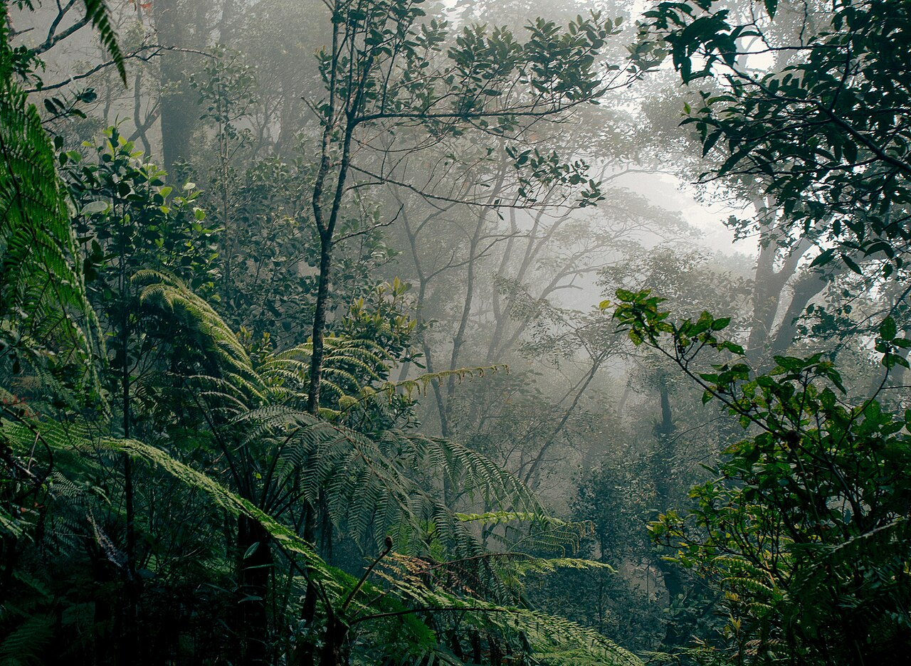
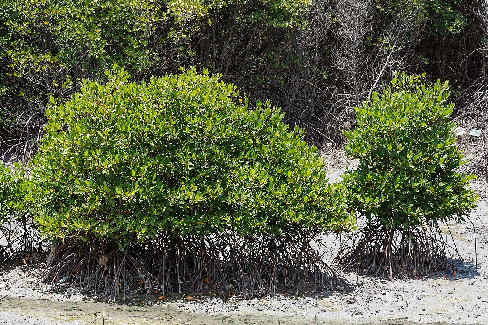
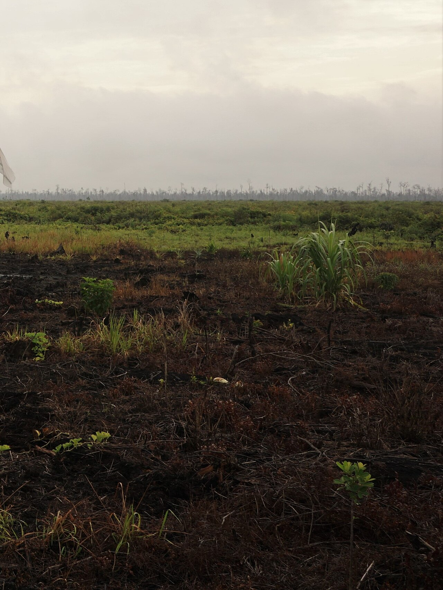
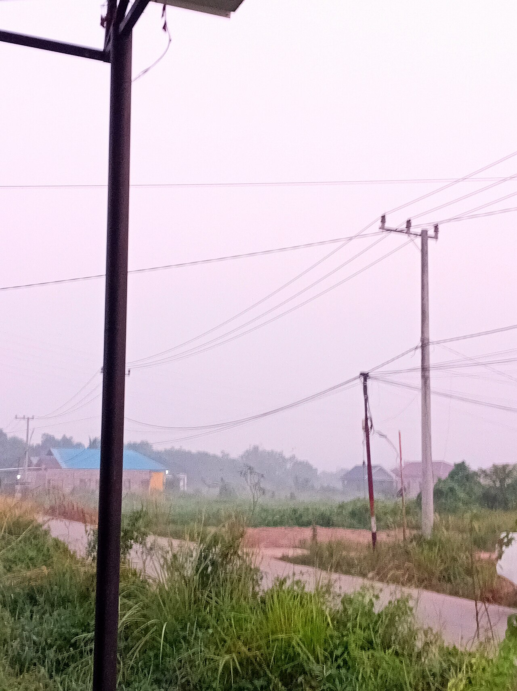

Kurs USD ke IDR
0
memuat
Ekonomi, alam, kualitas udara, dan kebakaran hutan 2026. Semuanya dari sumber publik yang bisa Anda buka sendiri. Angka yang tidak bisa dipertanggungjawabkan tidak ditampilkan.

Satu angka yang berubah setiap hari dan langsung terasa di harga barang impor, biaya sekolah di luar negeri, dan ongkos kirim dari luar.
Riwayat tersimpan di peramban ini sejak Anda pertama membuka halaman. Tidak ada yang dikirim ke server.
Angka jangka panjang dari World Bank. Tiap kartu menyebut tahun datanya, karena tahun terbaru yang tersedia untuk tiap indikator tidak selalu sama.
Hutan, laut, dan gambut yang menopang negara ini, beserta batas daya tampungnya.


Sekitar tahun 1900, tutupan hutan Indonesia diperkirakan 170 juta hektare. Pada akhir abad ke-20, angkanya tinggal di bawah 100 juta hektare. Deforestasi menguat sejak 1970-an. Pada 1950 hutan primer masih sekitar 145 juta hektare, dengan 14 juta hektare hutan sekunder di sekitarnya.
Kehilangan hutan primer tahunan sempat turun ke sekitar 930.000 hektare pada 2016. Tekanannya tidak hilang. Sekitar 3,3 juta hektare hutan sudah berubah menjadi perkebunan kelapa sawit. Perkebunan, tambang, dan kolam ikan bersama-sama menyumbang sekitar 5 persen deforestasi nasional. Sisanya dari pembukaan lahan dan kebakaran.
Indonesia salah satu negara megadiverse dunia. Di Bird's Head Seascape, Papua, tercatat 574 spesies karang: 95 persen dari total Coral Triangle dan 72 persen dari seluruh dunia. Satu lanskap kecil di timur Indonesia memuat hampir tiga perempat spesies karang bumi.
Lebih dari 500 kawasan lindung mencakup 57 taman nasional, ditambah cagar alam dan suaka margasatwa, totalnya 27 juta hektare. Sembilan taman nasional berstatus warisan dunia. Cakupan ini naik dari 10 persen luas daratan pada 1980-an.
Coral Triangle, yang sering disebut Amazonnya laut, membentang 5,7 juta kilometer persegi dan memuat lebih dari 76 persen spesies karang pembentuk terumbu dunia. Padang lamun di kawasan ini menutup sekitar 58.550 kilometer persegi, dengan 21 spesies lamun.
Indonesia juga memegang mangrove terluas di dunia: 3,40 juta hektare dari total global 15,9 juta hektare (estimasi 2025). Asia menyumbang 6,10 juta hektare, dan Indonesia sendiri lebih dari seperlima angka dunia.
Indonesia punya lahan gambut tropis lebih luas dari negara mana pun. Gambut menyimpan karbon jauh lebih padat daripada hutan di atasnya, tetapi hanya selama tetap basah. Negara ini kehilangan lahan basah sekitar 100.000 hektare per tahun.
Begitu dikeringkan untuk perkebunan atau kanal, gambut berubah dari penyerap menjadi sumber emisi, dan bahan bakar. Inilah simpul yang menghubungkan hutan, kebakaran, dan kabut asap di halaman ini: lahan yang dikeringkan terbakar, dan yang terbakar melepas karbon yang tersimpan berabad-abad.
PM2.5 adalah partikel halus yang paling berbahaya saat karhutla, cukup kecil untuk masuk ke paru-paru dan aliran darah. Angkanya dari model atmosfer yang menggabungkan citra satelit dan data permukaan, bukan dari sensor resmi pemerintah.
Baca dengan hati-hati. Angka PM2.5 tinggi di Jakarta hampir selalu datang dari lalu lintas dan industri, bukan dari asap karhutla. Yang menandai karhutla adalah lonjakan di kota gambut: Palangka Raya, Pekanbaru, Pontianak, Jambi, dan Banjarmasin. Satu angka tinggi tidak membuktikan apa pun tanpa melihat polanya.
Bukan bencana yang tiba-tiba. Polanya berulang: kemarau panjang, lahan gambut yang sudah dikeringkan, lalu api yang menyebar di bawah tanah dan bertahan berbulan-bulan.


Data Sipongi/Kementerian Kehutanan per 20 Agustus 2026. Kalimantan Barat menanggung beban terbesar, hampir dua kali provinsi berikutnya, dan sebagian besar lahannya gambut.
| # | Porsi | Proporsi | ||
|---|---|---|---|---|
| Memuat data provinsi… | ||||
Sebelas provinsi ini menyumbang mayoritas luas terbakar nasional, tetapi totalnya tidak sama dengan angka nasional. Pemerintah sendiri menerbitkan beberapa angka berbeda pada tanggal berbeda. Lihat bagian Batas data.
4 orang meninggal dan 347 orang terluka akibat langsung karhutla, menurut Kementerian Kesehatan. Beban penyakit pernapasan jauh lebih besar: lonjakan ISPA di puskesmas daerah terdampak, terutama pada anak dan lansia. Angka pastinya tidak pernah dirilis lengkap.
CELIOS memperkirakan kerugian Rp39 sampai 123 triliun untuk Januari sampai Agustus 2026, gabungan kerusakan ekonomi dan biaya kesehatan. Rentangnya lebar karena metode valuasi berbeda. Ini estimasi lembaga independen, bukan angka resmi pemerintah.
Ratusan sekolah diliburkan di Sumatera dan Kalimantan saat indeks kualitas udara masuk kategori berbahaya. Setiap hari libur adalah hari belajar yang hilang, dan tidak ada mekanisme penggantian.
Jarak pandang turun drastis saat asap tebal, sehingga penerbangan di bandara terdampak ditunda atau dibatalkan. Biaya ini langsung terasa, tetapi jarang dihitung sebagai kerugian karhutla.
107.465 hektare terbakar, naik sekitar 110 persen dibanding periode yang sama pada 2023. El Niño kuat memperpanjang musim kering.
Asap menutup langit Sumatera dan Kalimantan. Pada 18 Agustus, Menteri Kehutanan Raja Juli Antoni menyebut angka 202 ribu hektare.
Sipongi merilis sebaran provinsi: Kalimantan Barat 38.310 hektare, disusul Papua Selatan dan NTT.
Menteri Lingkungan Hidup Jumhur Hidayat menyebut sekitar 85 ribu hektare berada di kawasan konsesi, dengan 335 perusahaan terindikasi memiliki titik api. Beberapa hari kemudian ia membantah pernyataannya sendiri.
WALHI merilis analisis: 74 persen titik panas Kalimantan berada di lahan konsesi, yaitu 10.739 titik di HGU sawit, 7.880 di konsesi tambang, dan 6.905 di PBPH.
Kemenhut mencatat 189 titik panas nasional. Empat hari kemudian angkanya turun menjadi 55 titik.
Bagian ini sengaja ada. Untuk karhutla, angka yang paling sering dikutip justru yang paling tidak sepakat, termasuk di antara instansi pemerintah sendiri.
107.465 hektare (Januari sampai Juni), 202 ribu hektare (Menteri Kehutanan, 18 Agustus), dan sekitar 85 ribu hektare di konsesi (Menteri Lingkungan Hidup, 22 Agustus) tidak bisa dijumlahkan atau dibandingkan langsung. Cakupan dan metodenya berbeda.
"Kawasan hutan" menurut status hukum dan "luas berhutan" menurut citra satelit bisa berselisih puluhan juta hektare. Halaman ini memakai definisi yang paling konservatif, dan menyebutnya.
PM2.5 diambil dari model atmosfer Open-Meteo, gabungan satelit dan data permukaan, bukan dari stasiun pemantau pemerintah. Selisih dengan sensor lapangan bisa signifikan.
Rp39 sampai 123 triliun berasal dari CELIOS, lembaga independen, dengan metode valuasi yang tidak dirinci penuh. Rentang selebar itu sendiri adalah pesannya.
Setiap indikator di halaman ini, lengkap dengan tahun data, sumber, dan status pengambilannya. Klik judul kolom untuk mengurutkan.
| Sumber | Status | |||
|---|---|---|---|---|
| Memuat data indikator… | ||||
Semua data berasal dari API publik yang bisa dibuka tanpa kunci. Tidak ada server perantara yang menyimpan data Anda.
PDB, PDB per kapita, pertumbuhan, inflasi, penduduk, pengangguran, kemiskinan, manufaktur, ekspor, investasi asing, harapan hidup, akses listrik, pengguna internet, tutupan hutan, energi terbarukan, emisi CO₂.
api.worldbank.orgPM2.5, PM10, dan US AQI untuk enam kota, dari model atmosfer CAMS.
open-meteo.comHalaman mengambil data langsung dari peramban Anda. Hasilnya disimpan di localStorage selama 15 menit untuk data live dan 24 jam untuk data tahunan, supaya halaman tetap terbaca saat jaringan lambat.
Lihat status liveEnam foto dari Wikimedia Commons. Penulis dan lisensinya tercantum di assets/CREDITS.md.
Angka statis diperiksa terhadap sumbernya dan dicatat di DATA-AUDIT.md. Kalau sebuah angka tidak bisa diverifikasi, angka itu dibuang, bukan ditebak.
Batas data